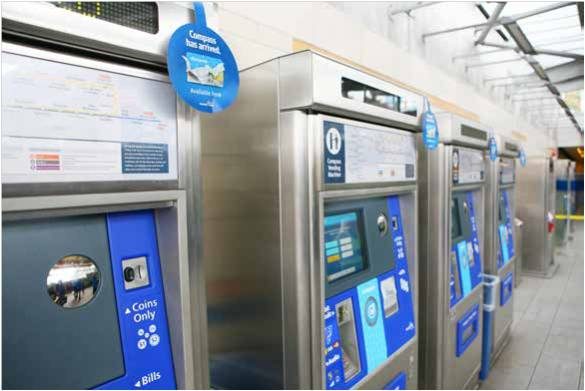

Tools Used
Initiated By
TransLink
Results
- 95% adoption rate of the new card system
- Transit ridership increased 4-6% per year following introduction
TransLink’s Smart Card
British Columbia’s TransLink introduced Compass, a travel pass payment system that replaced 150 different tickets and passes. To ensure positive adoption, TransLink brought customers through a series of messaging that generated awareness, created broad comprehension around Compass benefits and features, and educated customers on proper card use behaviour. It achieved a 95% adoption rate within months of closing the gates, and transit ridership increased 4-6% per year following introduction
Background
TransLink is Metro Vancouver's regional transportation authority, responsible for regional transit, cycling and commuting options as well as Intelligent Transportation System programs. It delivers its services through operating companies.
In addition, Translink shares responsibility for the Major Road Network (MRN) and regional cycling with municipalities in Metro Vancouver. It is the first North American transportation authority to be responsible for the planning, financing and managing of all public transit in addition to major regional roads and bridges. Under legislation introduced by the provincial government in 2007, TransLink’s governance structure was changed so that it has the ability to provide services under agreements with nearby municipalities from Pemberton to Hope.
The organization is committed to environmentally responsible solutions by helping people make smarter transportation choices. Its environmental and emissions policies are developed to address the influence it has on the region-wide transportation system.
In 2015, as part of its journey to create a seamless fare system providing greater travel convenience, flexibility and security, Translink introduced Compass. This new payment system replaced 150 previous tickets and passes.
Getting Informed
This intervention directly addressed convenience as a barrier to taking transit more.
Barriers to switching to the new card system included the following.
- Switching from an established fare payment system that was in place for over 30 years
- Gaining public trust of newly implemented technologies
- Travel impacts related to closing fare gates
- Achieving buy-in of the benefits and improved conveniences, including improved securities and cost savings to both individual users and institutions
Delivering the Program
Compass cards were deployed in August 2015. Full deployment for the general public took place on November 2, 2015. After April 4, 2016, Compass cards and tickets were required for all trips taken on the SkyTrain and SeaBus. While the launch of the Compass system was targeted at all metro Vancouver residents and visitors, specific sub-targets included commuters, social agencies, businesses, schools, seniors, accessible community, newcomers and special event attendees.
The integrated marketing campaign featured transit advertising, retail point of purchase, newspaper, out of home, digital, video, radio, earned media and outreach teams to ensure a smooth transition for customers.(Mass Media, Prompts)

Outreach was delivered over a six month period, predominately during peak times, with coverage on three transit lines, Sea Bus Stations and high-traffic bus hubs. Ongoing outreach has been provided on request, particularly to local special interest groups such as businesses, schools, seniors.

Promotional channels included: bus wraps and other transit system ads, newspaper and radio ads, digital ads and promotion (including Facebook, CNN, RevScene, Bloomberg, The Vancouver Sun, You Tube, Twitter and Instragram), and point-of purchase ads on ticket vending machines.

The region continued to evolve its integrated transportation / mobility options with Compass to provide residents and visitors with even more convenience when getting around the Region sustainably and conveniently. One element of this work involved creating wider access to secure bike parking facilities.
Measuring Achievements
Key measures included the following.
- Fare revenue and ridership
- Compass adoption rate
- # of impressions delivered through campaign channels such as in-situ transit advertising, traditional and digital paid media and social media.
- # registered Compass cards
- Earned positive media
- Interdepartmental cooperation
- Establishment of outreach group
- # training sessions for special interest groups including social agencies, business, schools and seniors
- Creation of Ask Compass website
- Creation of new Compass Service Center
- Information materials developed in multi languages
- Additional staff support at CVM’s for purchase and loading of Compass products
Results
Translink achieved a 95% adoption rate to Compass within months of closing the gates on April 4, 2016.
Transit ridership increased by between 4% and 6% each year since introduction of the new card in 2015.
- During the same time period (2014-2017) GVRD’s population was growing at only 1.4% to 1.6% a year
- During the same time period (2014-2017) transit growth elsewhere in Canada and the USA was stagnant.
The decrease has therefore been attributed in large part to (1) introducing a fare system that provided greater travel convenience, flexibility and security, and (2) related advertising.
Notes
Many employees from across the TransLink organization volunteered their time and supported frontline staff and customers as they transitioned to Compass & the fare gate closures. This initiative proved to boost employee morale, provided a chance for staff to work with peers from other work area’s and ultimately helped customers transition seamlessly.
Integrated transportation / mobility options with Compass continued to evolve and provide residents and visitors more convenience to getting around the Region sustainably and conveniently including access to secure bike parking facilities.
Data Sources
www.compasscard.ca/
www.translink.ca/en/Fares-and-Passes/Compass-Card.aspx
This case study was written in 2018 by Jay Kassirer.